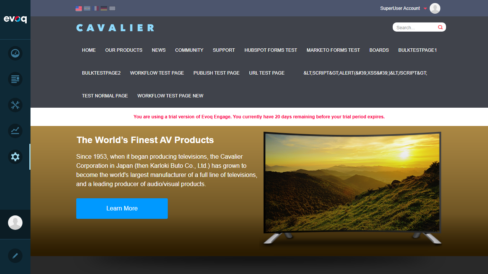

Test Case 1: Verify Save button is visible FAIL
Objective: Verify that the Save button is visible in the Account Settings panel.
Steps Taken:
- Logged in as SuperUser (host/Pass123456)
- Located the "nav_Accounts" menu item in the PersonaBar
- Clicked on the nav_Accounts menu item multiple times
- Used JavaScript to programmatically trigger the click event
- Waited for panel content to load
Issue Found: The nav_Accounts menu item exists in the PersonaBar, but clicking on it does not open any panel or load any content. The AccountSettings.html file contains the Save button, but this content is never displayed in the UI.
Screenshot - Login Confirmed:

Screenshot - PersonaBar with nav_Accounts visible:

Screenshot - After clicking nav_Accounts (no panel opened):
